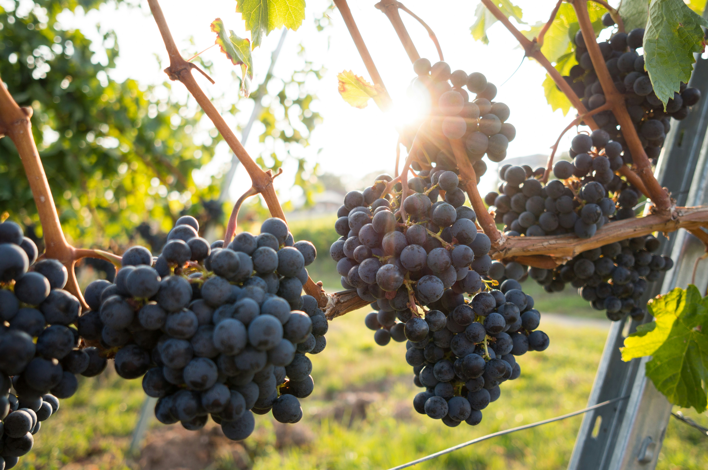
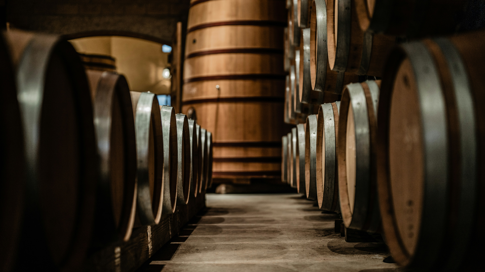

Sustainable Farming
We tend the land with care, protecting soil, water, biodiversity, and the systems that sustain future harvests.
Cape Town Farm
A heritage-led agricultural estate shaped by quality, care, and long-term opportunity.
Our Manifesto
Our land, our people, our future.
We tend the land with care, protecting soil, water, biodiversity, and the systems that sustain future harvests.
From vineyards to orchards and livestock, our work is shaped by detail, patience, and an uncompromising standard.
Our estate is a place where skills grow, careers take root, and surrounding communities are meaningfully supported.

The Estate
Cape Town Farm is imagined as a diverse estate where heritage farming, modern stewardship, and human care meet in one living landscape.
Here, vineyards, orchards, livestock, and cultivated fields work in dialogue with the natural environment rather than against it.
What We Produce

Vineyards shaped by the land and the rhythms of the season.

Sunlit citrus grown with care for freshness, flavour, and balance.

Livestock integrated into a wider, thoughtfully managed agricultural system.

A broad mix of cultivated land supporting both food and soil resilience.
Wine
Wine is the refined expression of the farm's vineyard heritage, shaped by patience, craftsmanship, and a deep belief in land stewardship.


Sustainability
Responsible land management, careful water use, long-term planning, biodiversity, and thoughtful livestock stewardship all shape the way we work.

People
Agriculture is built by skilled hands, patient minds, and a shared commitment to care. Cape Town Farm is as much about human opportunity as it is about growth.
We imagine a future where employment, training, and community development remain central to daily life on the estate.
Careers
These listings are illustrative demonstration content for a premium farm recruitment experience.
Support daily estate tasks and help maintain high standards across the working farm.
Contribute to vineyard care, seasonal production support, and field quality standards.
Help care for orchard production and the careful handling of citrus harvests.
Assist daily animal care and support the broader livestock operations on the estate.
Play a hands-on role in supporting the machinery and operational equipment across the estate.
Support recruitment, scheduling, and day-to-day coordination in a busy rural business environment.
Visit & Enquire
Estate Map Placeholder